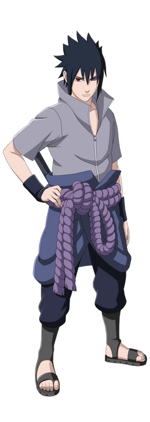
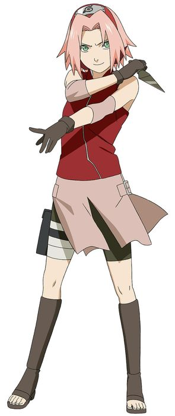
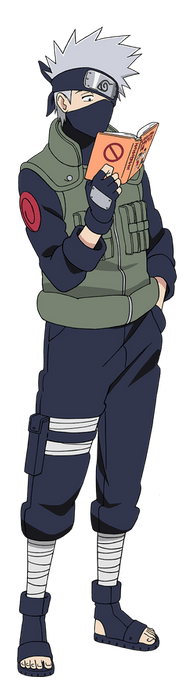
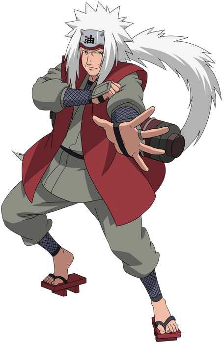
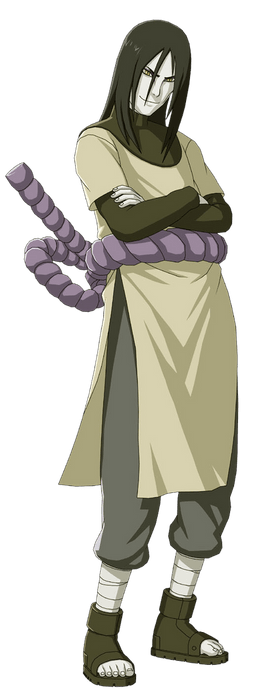
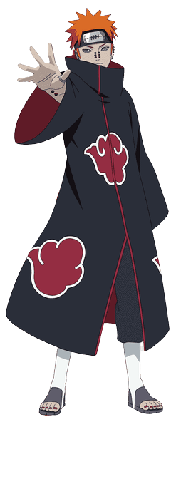
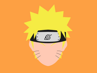

|  |
Sasuke Uchiha
Sasuke Uchiha is geboren in de Uchahi clan. Sasuke is lid van team 7. Zijn broer
Itachi Uchiha, die in dezelfde clan is geboren, heeft de hele
Uchiha clan gedood. Om die rede wil Sasuke naar de slechte kant om
meer kracht en technieken te verzamelen om zijn broer het zelfde lot
te geven dat zijn broer gaf aan hun ouders en de gehele Uchiha clan.
|
Sakura Haruno
Sakura Haruno is een vriend van Naruto. Ook Sakura is lid van team 7.
Zij en Naruto delen hetzelfde doel om Sasuke terug te halen. In de loop
van tijd beseft Sakura dat ze beter een medische ninja kan worden, aangezien
haar vechttechniek niet erg goed was.
|
 |
|  |
Kakashi Hatake
Kakashi Hatake is de zoon van de "White Fang of the leaf". Kakashi is
de leider van team 7. Hij heeft Naruto, Sasuke en Sakura hard getraind.
Ook Kakashi helpt Naruto met zijn doel te bereiken door hem nog sterker
te maken en hem nieuwe technieken te leren.
|
Jiraiya
Jiraiya is 1 van de "legendary sannin". Hij bewaakte de "toad
summoning scroll". Ook Jiraiya heeft Naruto gehoplen om sterker te
worden en zijn vaardigheden te verbeteren. Zo heeft Jiraiya gehoplen
Naruto zijn eigen Rasengan te ontwikkelen.
|
 |
|  |
Orochimaru
Orochimaru is ook 1 van de "legendary sannin". Hij keerde echter
tot het slechte pad. Orochimaru streeft naar alle kracht en kennis.
Hij gaf Sasuke een curse mark en hoopte dat Sasuke hem zou opzoeken
voor meer kracht. Hij deed dat en Sasuke werd sterker. Orochimaru
was iets van plan. Hij wou Saskuke's lichaam overnemen, maar toen
hij dat probeerde, doodde Sasuke hem.
|
Pain
Pain is de leider van de "Akatsuki". Hij is opgevoed in de
"rain village" en zijn ouders zijn allebei vermoord door ninja's
van de "leaf village". Hij werd later ook getraind door Jiraiya.
Jaren later vecht hij met Jiraiya en vermoord hij zijn oude sensei.
|
 |
